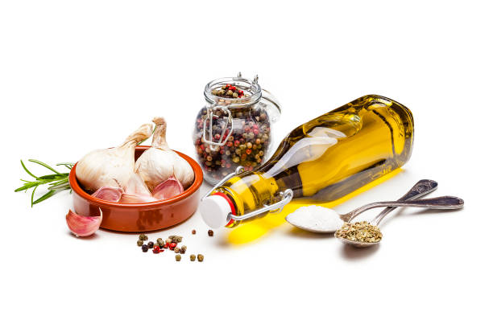

Curry de Pollo con Arroz Basmati

Ingredientes:
- 500 g de pechuga de pollo
- 1 cebolla grande
- 2 dientes de ajo
- 1 trozo de jengibre fresco (2 cm)
- 2 cucharadas de curry en polvo
- 400 ml de leche de coco
- 300 g de arroz basmati
- Aceite vegetal
- Sal y pimienta
Preparación:
- Preparar los ingredientes: Pica finamente la cebolla, el ajo y el jengibre. Corta el pollo en cubos medianos.
Creador de la página web: Martín Veiga Álvarez